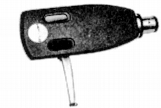
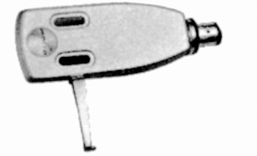
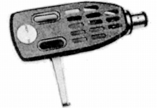
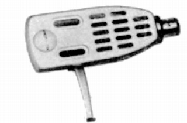
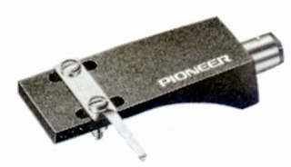
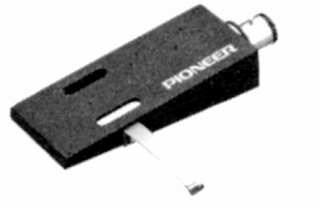
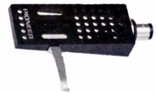
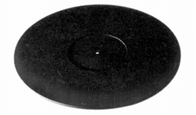
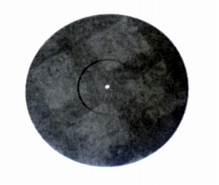

ヘッドシェル
PP-301

■価格 1,000円
■重量 7.8g
■備考 アルミプレス加工
価格は1973年頃のもの
1974年には\1,200
PP-302

■価格 1,200円
■重量 7.8g
■備考 アルミプレス加工(PP-301の白バージョン）
PP-303

■価格 1,150円
■重量 7g
■備考 アルミプレス加工
価格は1973年頃のもの
1974年には1,400円
PP-304

■価格 1,150円
■重量 7g
■備考 アルミプレス加工(PP-303の白バージョン）
価格は1973年頃のもの
1974年には1,400円
PP-312

■価格 2,500円
■重量 7.5g
■備考 炭素繊維成型
JP-502

■価格 1,500円
■重量 9.1g
■備考 カーボンファイバー成型
JP-503

■価格 1,700円
■重量 8.7g
■備考 カーボンファイバー成型
ターンテーブルシート
JP-501

■価格 2,000円
■備考 材質；ブチルゴム
1970年代からのロングセラー
JP-701

■価格 4,200円
■備考 材質；ブチルゴム
2000年頃の製品。当時はまだピュアモルトシリーズのアナログプレイヤーが残っていた。
厚み4�o、重量700g。
パイオニアのインデックスへ